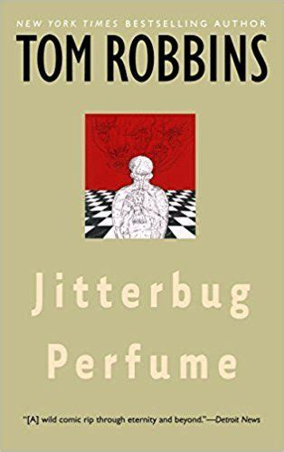

Scarlett's Top 5's
Five current favorite writers:

-
Tom Robbins
-
Barbara Kingsolver
- Helen Oyeyemi
- Diana Gabaldon
- Rick Rubin
I love these writers for their use of surreal scenes, vivid imagery, and thought provoking writing.
In their own way each of these writers leave me thinking long after I've finished the book, pulling me
out of my class and work hustle to just ponder the weird, the world, and existence.
Five songs I have on repeat:
Recently I've been enjoying playing albums all the way through, specifically Doechii and Tyler, the Creator's newest albums because
they have so much variety.At the same time, I've found when I work an opening shift and I'm dialing espresso in the wee hours of the morning
I need someting upbeat like Bad Bunny or Beck to make my job enjoyable. Finally Mk.gee has been great to wind down to on the train home
from school, especially with all the rain. The music I listen to really dictates my mood.